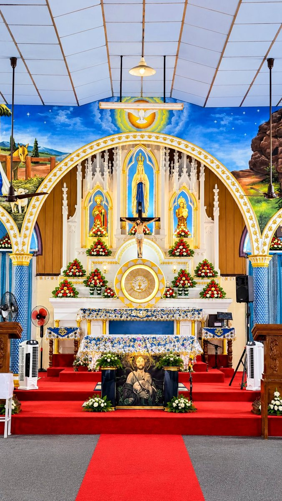
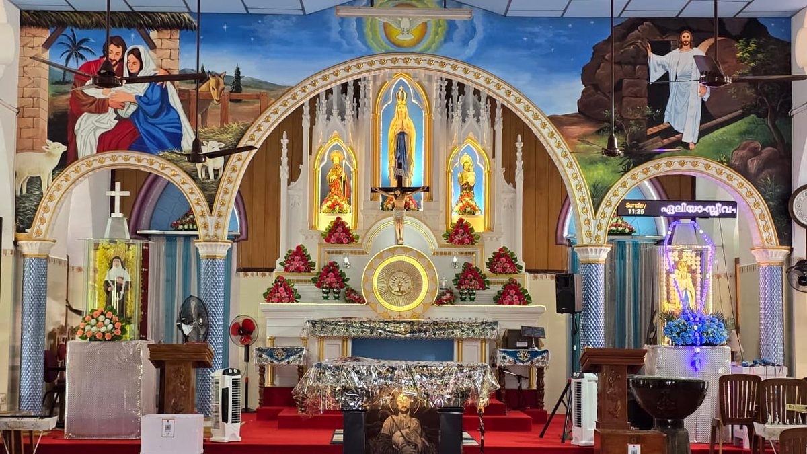
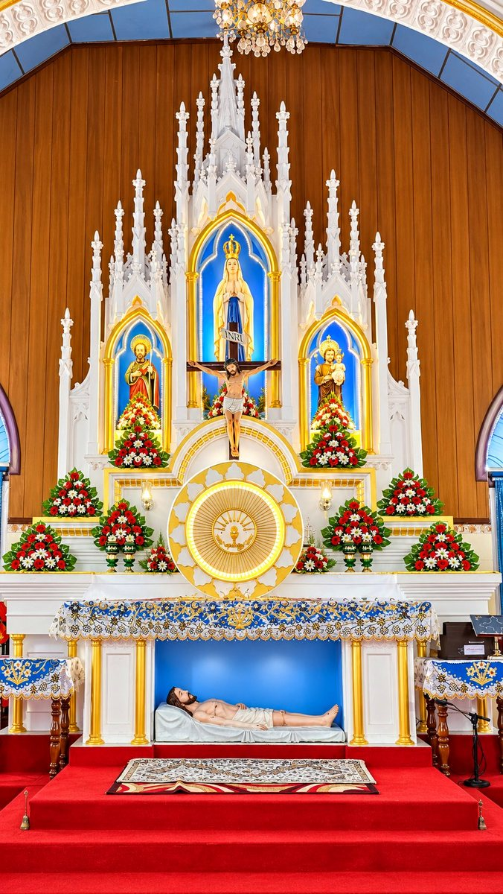

Our annual parish feast in honour of our patroness is celebrated every February with solemn Mass, procession and parish gatherings. All are welcome.

Join us for the sacred Triduum and Easter celebrations. Detailed service timings are announced in the Sunday bulletin and on the parish notice board.
Relive our recent Perunnal celebrations — watch the live stream and highlights on our YouTube channel, now in the parish gallery.
Watch Videos
Catechism and faith formation classes for children and youth are held every Sunday. Contact the parish office for enrolment details.

Eucharistic adoration is held on every First Friday. Come and spend time in prayer before the Blessed Sacrament.
Weekly announcements, Mass intentions and parish updates are available in the Sunday bulletin at the church entrance.